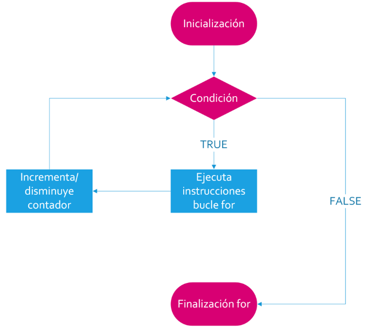
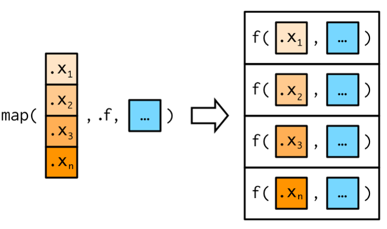

for (variable in vector) {
}Extra: Control de flujo y funciones
Bucles tradicionales
Un bucle es una estructura de control que permite ejecutar un conjunto de instrucciones repetidamente mientras se cumple una condición específica. Los bucles, se encuentran en todos los lenguajes de programación y se utilizan para automatizar tareas repetitivas (iterar).
El lenguaje R también los implementa en sus paquetes base y dispone de tres de ellos:
for(): estructura de control de flujo de iteración a partir de una secuencia de elementos
while(): estructura de control de flujo de iteración mientras una condición es verdadera
repeat(): estructura de control de flujo de iteración de repetición y control manual conbreak
Bucle for
La idea principal de este bucle es repetir un bloque de código un número específico de veces o para cada elemento en objeto (vector, etc).
Su esquema de funcionamiento es el siguiente:

La estructura sintáctica viene dada por un snippet que RStudio escribe por nosotros:
Un ejemplo sencillo que muestra su funcionamiento puede ser.
for (i in 1:5) {
cat("El valor de i es:", i, "\n")
}El valor de i es: 1
El valor de i es: 2
El valor de i es: 3
El valor de i es: 4
El valor de i es: 5 Lo que estamos haciendo es recorriendo un vector numérico de 5 posiciones, declarado bajo el nombre de i y luego entre llaves se encuentra el código que escribe en pantalla un texto fijo que incluye a los valores de i en cada repetición.
El mismo formato de bucle puede recorrer posiciones y/o elementos de un objeto de la siguiente forma:
x <- c(6, 4, 3, 8)
for (i in 1:length(x)) {
print(x[i]*4) # utiliza la i para recorrer los elementos de x por su indice
}[1] 24
[1] 16
[1] 12
[1] 32Recorre el vector x y multiplica cada elemento por 4. Lo mismo que hace R vectorizadamente de manera simple.
x * 4[1] 24 16 12 32Por supuesto que la mayoría de las tareas que R ejecuta de forma vectorizada hace que no tengamos que usar esta forma de bucle para operaciones comunes pero, a veces cuando el código dentro de las llaves es extenso y complejo será necesario.
Bucle while
Este bucle se repite mientras la condición especificada es evaluada como verdadera (TRUE). Si en algún momento la condición se evalúa como falsa (FALSE), el bucle se detiene y la ejecución continúa con el código después del bucle.
Su esquema de funcionamiento es el siguiente:
Su snippet es:
while (condition) {
}Un ejemplo posible muestra que primero inicializamos una variable i que servirá como contador, luego escribimos una condición en el inicio del bucle indicando que recién saldremos de él cuando esta variable sea igual a 6 y finalmente dentro de las llaves armamos el código que se va a repetir no olvidando de la sumatoria del contador i.
i <- 1
while (i <= 5) {
cat("El valor de i es:", i, "\n")
i <- i + 1
}El valor de i es: 1
El valor de i es: 2
El valor de i es: 3
El valor de i es: 4
El valor de i es: 5 El último de los bucles, repeat() no tiene automatizada su salida y necesita que incorporemos dentro de su cuerpo entre llaves la función break a partir de alguna condición (se suele utilizar la estructura condicional if()). Esta forma de trabajo lo hace peligroso porque suelen generar bucles infinitos de donde no hay salida, salvo la interrupción abrupta del interprete.
Dado que su construcción es muy artesanal no vamos a mostrarlo en este documento. Su uso no será necesario durante el curso y probablemente no lo necesiten aplicar en el futuro.
Mapeos con purrr
El patrón de iterar sobre un vector o variable, hacer algo con cada elemento u observación y almacenar los resultados es tan común que el paquete purrr incluído en tidyverse aporta una familia de funciones dedicadas a esta tarea.
Hay una función para cada tipo de output:
map() crea una lista. map_lgl() crea un vector lógico. map_int() crea un vector de enteros. map_dbl() crea un vector de numérico (double). map_chr() crea un vector de caracteres. map_df() crea un dataframe
Cada función map, mapea, es decir, toma un vector como input, aplica una función a cada elemento y luego devuelve un nuevo vector que tiene la misma longitud (y los mismos nombres) que el input. El tipo de vector está determinado por el sufijo de la función map.

Su estructura sintáctica es:
map(.x = ,
.f = ,
... = )Donde en .x es un vector, un data-frame o lista, .f es la función a aplicar y ... son otros argumentos opcionales.
Las funciones map tienen un nivel superior de abstracción y puede llevar mucho tiempo entender cómo funcionan.
Algunos usuarios evitan los bucles tradicionales porque son lentos o “viejos”, pero esto no es así. Las principales ventajas de usar funciones como map() no es la velocidad, sino la claridad: hacen que tu código sea más fácil de escribir y leer.
Unos ejemplos simples de uso son:
# a partir de un datframe con variables numéricas
datos# A tibble: 10 × 5
grupo a b c d
<chr> <dbl> <dbl> <dbl> <dbl>
1 B -0.185 1.84 0.474 -2.45
2 B 0.843 0.131 0.602 -1.52
3 B 0.703 -0.400 0.481 -1.35
4 B 0.0943 0.874 -0.677 1.72
5 B 0.375 -1.16 -0.843 -2.13
6 B -1.40 -2.65 0.300 0.908
7 B 0.924 -0.456 -0.453 0.0930
8 B 0.595 0.881 0.951 0.211
9 A -1.33 1.63 0.876 -0.568
10 B -0.751 0.297 -0.279 -0.000842map_dbl(.x = datos, .f = mean) grupo a b c d
NA -0.01398414 0.09927783 0.14299326 -0.50865939 Calcula la media por cada una de las variables numéricas. Como la variable grupo no lo es me devuelve una advertencia y un NA como resultado.
Si quisiera evitarlo podemos hacer.
map_dbl(.x = datos |> select(-grupo),
.f = mean) a b c d
-0.01398414 0.09927783 0.14299326 -0.50865939 Observen que dentro del argumento .x construimos una estructura con tuberías donde seleccionamos a todas las variables menos a grupo (esto se puede hacer en los argumentos de muchas funciones).
Aplicación de un bucle tradicional
Mostramos un ejemplo posible donde necesitamos aplicar un bucle para iterar una serie de repeticiones.
Este ejemplo consiste en leer un archivo habitual en el trabajo epidemiológico como son las proyecciones poblacionales que publica el INDEC luego de cada censo. En este caso particular son proyecciones que van desde 2010 a 2040 para las 24 provincias de Argentina por quinquenios y sexo.
La tabla tiene este formato:
Cada provincia se ubica en una hoja del archivo Excel y la estructura de las proyecciones no tiene un formato que reconozcamos como ordenado. El objetivo es producir un dataframe donde nos queden 4 variables (Edad, Sexo, Provincia, Poblacion) con los datos de las proyecciones para 2024.
Lo primero que vamos hacer es almacenar en un vector los nombres de las hojas del archivo. Usando la función excel_sheets() extraemos estos codigo-nombres (la expresión de índices [-(1:2)] sirve para omitir los nombres de la primera hoja oculta que tiene el archivo llamada “GraphData” y la segunda donde esta el total país).
library(readxl)
hojas <- excel_sheets("datos/c2_proyecciones_prov_2010_2040.xls")[-(1:2)]Nos va a quedar el vector hojas con los nombres de las 24 provincias que figuran en las hojas Excel.
hojas [1] "02-CABA" "06-BUENOS AIRES" "10-CATAMARCA"
[4] "14-CÓRDOBA" "18-CORRIENTES" "22-CHACO"
[7] "26-CHUBUT" "30-ENTRE RÍOS" "34-FORMOSA"
[10] "38-JUJUY" "42-LA PAMPA" "46-LA RIOJA"
[13] "50-MENDOZA" "54-MISIONES" "58-NEUQUÉN"
[16] "62-RÍO NEGRO" "66-SALTA" "70-SAN JUAN"
[19] "74-SAN LUIS" "78-SANTA CRUZ" "82-SANTE FE"
[22] "86-SANTIAGO DEL ESTERO" "90-TUCUMÁN" "94-TIERRA DEL FUEGO" Para aprovechar el contenido vamos a construir otro vector con los códigos solos. Aplicamos la función str_sub() sobre hojas.
provincias <- str_sub(hojas, start = 1, end = 2)provincias [1] "02" "06" "10" "14" "18" "22" "26" "30" "34" "38" "42" "46" "50" "54" "58"
[16] "62" "66" "70" "74" "78" "82" "86" "90" "94"A continuación vamos a necesitar separar la parte que no se repite y la parte que si. Por ejemplo, la columna donde está la edad cada 5 años es una parte fija que no necesaria volver a leer en cada hoja del archivo, en cambio las poblaciones si varían entre provincia y provincia.
grupo_edad <- read_excel("datos/c2_proyecciones_prov_2010_2040.xls",
sheet = 2, range = "A36:A56", col_names = F) |>
rename("Edad" = "...1")Leemos el archivo “c2_proyecciones_prov_2010_2040.xls” en su segunda hoja (la primera era la occulta) y con el rango “A36:A56”. Desactivamos nombres de columnas y renombramos con el nombre Edad. Podríamos haber leído cualquiera de las 24 hojas porque la columna de edad es la misma para todas.
grupo_edad# A tibble: 21 × 1
Edad
<chr>
1 0-4
2 5-9
3 10-14
4 15-19
5 20-24
6 25-29
7 30-34
8 35-39
9 40-44
10 45-49
# ℹ 11 more rowsNos queda un dataframe de nombre grupo_edad con 1 variable (Edad) y 21 observaciones.
Ahora, antes de comenzar con las repeticiones del bucle, debemos estructurar el dataframe contenedor de estas lecturas iterativas.
poblacion <- data.frame(Varon = NA, Mujer = NA, Provincia = NA, Edad = NA)Creamos poblacion como un dataframe con 4 variables Varon, Mujer, Provincia y Edad con datos vacíos (NA).
poblacion Varon Mujer Provincia Edad
1 NA NA NA NAEstamos en condiciones de utilizar un bucle for para ir rellenando el dataframe poblacion con las lecturas del archivo Excel.
for (i in 1:length(hojas)) {
datai <- read_excel("datos/c2_proyecciones_prov_2010_2040.xls",
sheet = hojas[i], range = "K64:L84", col_names = F)
datai <- datai |> mutate(Provincia = provincias[i]) |>
rename("Varon" = "...1",
"Mujer" = "...2") |>
bind_cols(grupo_edad)
poblacion <- poblacion |> bind_rows(datai)
}Analicemos la estructura del for() y el contenido del cuerpo encerrado entre llaves:
- Utilizamos la longitud del vector hojas para que la cantidad de repeticiones del bucle sea igual a la cantidad de hojas del archivo (serán 24 repeticiones, 1 por hoja)
1:length(hojas) [1] 1 2 3 4 5 6 7 8 9 10 11 12 13 14 15 16 17 18 19 20 21 22 23 24La primera línea del cuerpo crea el objeto datai que lee las poblaciones para el año 2024 de varones y mujeres usando un rango que deberemos construir mirando las ubicaciones dentro del archivo Excel. Además usamos la variable i del
for()para recorrer el vector hojas que tiene el nombre de cada una de las 24 provincias idénticas a las hojas del archivo, por lo que en la vuelta 1 leera el rango de la hoja 02-CABA, en la segunda la de 06-BUENOS AIRES y así hasta la última (94-TIERRA DEL FUEGO).La segunda estructura de código agrega a datai el código de la provincia en cada repetición recorriendo con la variable i el vector provincias. Luego renombra las cabeceras sin nombre para Varon y Mujer y finalmente une por columna con
bind_cols()las edades. Esta forma es la misma en nombre de variables, posición y tipo de datos que el contenedor creado previamente (poblacion).Por último, une por filas con
bind_rows()a datai con poblacion.
La operación construye un dataframe con dimensiones [ 505, 4 ], es decir, 505 observaciones por 4 variables.
Hay dos problemas finales para resolver, uno es que la primera observación es la de valores NA que usamos cuando creamos el contenedor.
poblacion |> slice(1:4) Varon Mujer Provincia Edad
1 NA NA <NA> <NA>
2 101130 95310 02 0-4
3 101700 96044 02 5-9
4 100390 95056 02 10-14Con drop_na() la podemos eliminar sin mayores problemas.
poblacion <- poblacion |> drop_na() # eliminamos primera linea con NAEl otro inconveniente es que la tabla final no cumple con los datos ordenados, porque Varon y Mujer no deberían ser nombres de variables sino categorías de la variable Sexo.
Aplicamos lo que sabemos de pivoteos con tidyr para arreglarlo.
poblacion <- poblacion |>
pivot_longer(cols = c(Varon, Mujer),
names_to = "Sexo",
values_to = "Poblacion")El resultado final es la tabla buscada con poblaciones proyectada por el INDEC de las 24 provincias por sexo y grupos de edades quinquenales en formato tidy-data:
poblacion# A tibble: 1,008 × 4
Provincia Edad Sexo Poblacion
<chr> <chr> <chr> <dbl>
1 02 0-4 Varon 101130
2 02 0-4 Mujer 95310
3 02 5-9 Varon 101700
4 02 5-9 Mujer 96044
5 02 10-14 Varon 100390
6 02 10-14 Mujer 95056
7 02 15-19 Varon 101138
8 02 15-19 Mujer 96827
9 02 20-24 Varon 97411
10 02 20-24 Mujer 96051
# ℹ 998 more rowsAplicación de una iteración map
Imaginemos que tenemos varios archivos de datos con la misma estructura producto de la vigilancia epidemiológica o de un estudio de cohorte donde cada uno de ellos pertenece a un mes. Para analizar todo un año en una sola tabla final, deberíamos leer 12 archivos de nombres diferentes y luego unir los datos uno debajo del otro.
Queremos hacer este trabajo pero simplificando el proceso agilizando el proceso de lectura y obtener una sola tabla con todas las observaciones generando un id que almacene el mes al que pertenece.
Vamos a hacer uso de la función dis_ls() del paquete fs (file system) que es muy útil cuando debemos hacer operaciones con carpetas y archivos de sistema desde el código (en este caso Windows).
library(fs)Con la función dir_ls() obtenemos listados de directorio (similar a dir() de la línea de comandos de Windows).
Si en la carpeta están solos los archivos de datos no hay que aclarar nada más pero si hay otros se puede usar el argumento glob para definir un patrón de búsqueda. Para que esto funcione bien los archivos tienen que tener un mismo formato en su nombre. Por ejemplo, aprovechando el formato de estos archivos vamos a usar el patrón “datos/datos_*_vigilancia.csv”.
archivos <- dir_ls(path = "datos", glob = "datos/datos_*_vigilancia.csv")
archivosdatos/datos_abril_vigilancia.csv datos/datos_agosto_vigilancia.csv
datos/datos_diciembre_vigilancia.csv datos/datos_enero_vigilancia.csv
datos/datos_febrero_vigilancia.csv datos/datos_julio_vigilancia.csv
datos/datos_junio_vigilancia.csv datos/datos_marzo_vigilancia.csv
datos/datos_mayo_vigilancia.csv datos/datos_noviembre_vigilancia.csv
datos/datos_octubre_vigilancia.csv datos/datos_septiembre_vigilancia.csv Quedaron almacenados en el vector archivos los 12 nombres de los archivos mensuales. Observemos que tienen el formato “datos/datos_mes_vigilancia.csv” y además nos dicen que son de texto plano con separador coma.
A continuación aplicaremos la función map_df() del paquete purrr junto a la función read_csv() para repetir las lecturas de estos archivos agregando el nombre de cada uno a las observaciones de la tabla final.
datos <- archivos |>
map_df(read_csv, .id = "archivo")La primera variable que tendrá el mismo nombre que definimos en el argumento .id es el nombre completo del archivo fuente.
datos |> count(archivo)# A tibble: 12 × 2
archivo n
<chr> <int>
1 datos/datos_abril_vigilancia.csv 157
2 datos/datos_agosto_vigilancia.csv 157
3 datos/datos_diciembre_vigilancia.csv 157
4 datos/datos_enero_vigilancia.csv 157
5 datos/datos_febrero_vigilancia.csv 157
6 datos/datos_julio_vigilancia.csv 157
7 datos/datos_junio_vigilancia.csv 157
8 datos/datos_marzo_vigilancia.csv 157
9 datos/datos_mayo_vigilancia.csv 157
10 datos/datos_noviembre_vigilancia.csv 157
11 datos/datos_octubre_vigilancia.csv 157
12 datos/datos_septiembre_vigilancia.csv 157En estos datos de ejemplo ficticios hay 157 observaciones de cada uno de los meses, pero en la realidad estas cantidades seguramente son variantes.
Para resolver el problema de que nos quede solamente el nombre del mes usaremos la función separate_wider_delim() de tidyr indicando que separe el nombre con el delimitador “_” y con el argumento names me quede la parte del medio con nombre mes y se deshaga de las constantes “datos/datos” y “vigilancia”.
datos |>
separate_wider_delim(cols = archivo,
delim = "_",
names = c(NA, "mes", NA)) |>
count(mes)# A tibble: 12 × 2
mes n
<chr> <int>
1 abril 157
2 agosto 157
3 diciembre 157
4 enero 157
5 febrero 157
6 julio 157
7 junio 157
8 marzo 157
9 mayo 157
10 noviembre 157
11 octubre 157
12 septiembre 157La estructura completa unida por tuberías nos quedaría:
datos <- dir_ls(path = "datos", glob = "datos/datos_*_vigilancia.csv") |>
map_df(read_csv, .id = "archivo") |>
separate_wider_delim(cols = archivo,
delim = "_",
names = c(NA, "mes", NA)) El resultado final es que leímos 12 archivos (podrían ser muchos más, todos los que quisiéramos) en tan solo 3 líneas de código unidas por dos tuberías.
datos# A tibble: 1,884 × 19
mes HC SEXO EDAD ANT_DIABETES ANT_TBC ANT_CANCER ANT_OBESIDAD ANT_ECV
<chr> <dbl> <chr> <dbl> <chr> <chr> <chr> <chr> <chr>
1 abril 26880 M 17 NO NO NO SI NO
2 abril 26775 M 18 SI NO NO NO NO
3 abril 26877 M 18 SI NO SI NO NO
4 abril 26776 M 18 NO NO NO SI SI
5 abril 26718 M 18 NO NO NO NO NO
6 abril 26738 M 18 NO NO NO NO NO
7 abril 26836 M 18 NO NO NO NO NO
8 abril 26823 M 18 NO NO SI NO SI
9 abril 26711 M 18 NO NO SI SI NO
10 abril 26852 M 18 NO NO SI NO NO
# ℹ 1,874 more rows
# ℹ 10 more variables: ANT_HT <chr>, ANT_COL <chr>, FUMA <chr>, EDADINI <dbl>,
# CANTIDAD <dbl>, COL <dbl>, PESO <dbl>, TALLA <dbl>, SIST <dbl>, DIAST <dbl>Creación de funciones
Una de las ventajas de usar lenguajes abiertos como el R es poder crear funciones.
Las funciones nos permiten automatizar tareas comunes de una manera más potente y general que copiar y pegar.
Escribir una función tiene tres grandes ventajas sobre usar copiar y pegar:
A medida que cambian los requisitos, solo necesitamos actualizar el código en un solo lugar.
Elimina la posibilidad de cometer errores incidentales al copiar y pegar (es decir, actualizar el nombre de una variable en un lugar, pero no en otro).
Facilita la reutilización del trabajo de un proyecto a otro, aumentando su productividad con el tiempo.
Si bien hay muchas tareas que puede hacer una función, existen tres tipos muy útiles:
Funciones vectoriales que toman uno o más vectores como entrada y devuelven un vector como salida.
Funciones de tablas de datos que toman un dataframe como entrada y devuelven un dataframe como salida.
Funciones gráficas que toman un dataframe como entrada y devuelven un gráfico como salida.
Esqueleto de una función
Cualquier función construida en R tiene una estructura o esqueleto similar, no importa lo que haga cuando la ejecutemos.
Todas ellas tienen:
Un nombre, que deberá cumplir con las caraterísticas que nos impone el lenguaje para nombres (no debe comenzar con un número, no debe utilizar palabras reservadas del lenguaje, no debe tener espacios entre los caracteres, etc.)
Argumentos, puede no haber o haber varios, dependiendo de lo que se necesite para que la función trabaje. Van encerrados entre paréntesis y separados por coma.
Un cuerpo, donde se desarrolla el código en cuestión, que se va a repetir cada vez que llamemos a la función. Este código deberá ser una abstracción generalizada de la solución al problema que abordemos para lograr que funcione en cualquier situación.
La sintaxis de creación en R es:
nombre_funcion <- function(variables) {
< cuerpo de la función >
} donde:
- nombre_funcion: es el nombre que le queremos dar a la función creada
- function(): es la palabra reservada por el lenguaje para crear funciones
- variables: es el espacio donde se declaran el o los argumentos con los que trabajemos. Puede, en ocasiones, no haber ninguno.
- {}: entre estas llaves se encuentra el cuerpo de la función
Funciones vectoriales
Para explicar su funcionamiento hagamos un ejemplo sencillo:
Supongamos que una labor habitual en nuestro trabajo sea convertir en años la diferencia entre dos fechas, por ejemplo entre la fecha de nacimiento y otra, para calcular la edad.
Queremos construir una función que realice este trabajo, recibiendo dos fechas como vectores y devolviendo una cantidad de años como vector.
Recurriendo a la documentación de semanas anteriores se puede ver que ejecutando la siguiente línea con funciones de lubridate se podía obtener los años en número entero:
interval(fecha_nacimiento, fecha) %/% dyears()Usemos eso para crear la función, a la que podemos llamar calculo_edad. Además le vamos a incorporar en la primera línea la activación del paquete lubridate, que necesitaremos dentro del cuerpo de la función. Para esta tarea, en lugar de library() usaremos require().
calculo_edad <- function(fecha_nacimiento, fecha) {
require(lubridate)
interval(fecha_nacimiento, fecha) %/% dyears()
}Para probar la función creada, la aplicamos a unos datos.
datos# A tibble: 2 × 2
FECNAC FECREG
<date> <date>
1 1954-05-23 2023-08-17
2 2003-01-24 2023-12-04Esta tabla tiene dos variables de tipo Date con dos observaciones de fecha, en la primera la fecha de nacimiento y en la segunda la fecha de registro. Para crear la nueva variable Edad pondremos dentro de un mutate() la función calculo_edad escrita anteriormente.
datos |>
mutate(Edad = calculo_edad(fecha_nacimiento = FECNAC, fecha = FECREG))# A tibble: 2 × 3
FECNAC FECREG Edad
<date> <date> <dbl>
1 1954-05-23 2023-08-17 69
2 2003-01-24 2023-12-04 20Observemos que nos calcula la edad como queríamos y que los nombres de las variables con los datos no importa que no coincidan con los nombres internos definidos en los argumentos.
Que otras consideraciones tenemos que tener en cuenta para que funcione bien? Por ejemplo que las fechas ya estén en formato Date. Que pasará si esto no sucede y son de tipo character:
datos# A tibble: 2 × 2
FECNAC FECREG
<chr> <chr>
1 23/05/1954 17/08/2023
2 24/01/2003 04/12/2023datos |>
mutate(Edad = calculo_edad(FECNAC, FECREG))# A tibble: 2 × 3
FECNAC FECREG Edad
<chr> <chr> <dbl>
1 23/05/1954 17/08/2023 NA
2 24/01/2003 04/12/2023 NANos devuelve valores NA en Edad producto de un error esperable porque la función interval(), que escribimos dentro de nuestra función, necesita que los valores de fecha sean de tipo Date o date-time.
Entonces podemos complejizar el cuerpo del código agregando algo para que resuelva este problema:
calculo_edad <- function(fecha_nacimiento, fecha) {
require(lubridate)
if (is.character(fecha_nacimiento)) {
fecha_nacimiento <- dmy(fecha_nacimiento)
}
if (is.character(fecha)) {
fecha <- dmy(fecha)
}
interval(fecha_nacimiento, fecha)%/% dyears()
}Volvemos a correr la función sobre los datos con las variables en formato character:
datos |>
mutate(Edad = calculo_edad(FECNAC, FECREG))# A tibble: 2 × 3
FECNAC FECREG Edad
<chr> <chr> <dbl>
1 23/05/1954 17/08/2023 69
2 24/01/2003 04/12/2023 20Ahora funciona bien pero así como solucionamos el tema del tipo de dato podríamos enfrentarnos a otros más, como la estructura de la fecha (si es dmy o mdy o ymd) o si el paquete lubridate no se encuentra instalado en mi sesión de R, etc.
Generalmente para que una función se pueda aplicar generalizadamente, como suelen ser las funciones de los paquetes publicados, necesitaremos que tenga controladas sus salidas de error lo mejor posible.
Que vimos hasta ahora de nuevo en el código previo:
Función
require()en lugar delibrary(): hacen lo mismo (activar un paquete) pero es preferiblerequire()porque si un paquete no está instalado solo generará una advertencia y luego continuará ejecutando el código.Función
if(): es la función condicional, hermana deifelse(), que conviene utilizar en casos donde ante una condición debemos tomar caminos diferentes. Se suelen usar en cuerpos de funciones y dentro de bucles tradicionales.
Una posibilidad para manejar errores por falta de instalación de paquetes es agregar una línea inicial con un condicional que consulte si la librería lubridate se encuentra instalada, y si no es así que la instale previamente.
calculo_edad <- function(fecha_nacimiento, fecha) {
if (!"lubridate" %in% installed.packages()) {
install.packages("lubridate")
}
require(lubridate)
if (is.character(fecha_nacimiento)) {
fecha_nacimiento <- dmy(fecha_nacimiento)
}
if (is.character(fecha)) {
fecha <- dmy(fecha)
}
interval(fecha_nacimiento, fecha)%/% dyears()
}Funciones de tablas de datos
Recordemos que las funciones de tablas de datos funcionan como funciones-verbos dplyr: toman un dataframe como primer argumento, algunos argumentos adicionales que dicen qué hacer con él y devuelven generalmente un dataframe.
A diferencia del proceso para funciones vectoriales, donde los nombre de las funciones declaradas en los argumento eran reemplazados por cualquier otro nombre de las variables externas de la función, aquí necesitamos utilizar unos operadores de evaluación especiales.
Se denomina “embracing” (abrazar) una variable al hecho de envolverla entre llaves {{ nombre_variable }}.
Abrazar una variable le dice a dplyr que use el valor almacenado dentro del argumento y no el argumento como el nombre “literal” de la variable.
Veamos un ejemplo de este tipo de funciones:
Creamos una función que realice un resumen de variables cuantitativas, calculando su mínimo, máximo, media, mediana, cantidad de NA y cantidad de observaciones totales.
resumen <- function(datos, var) {
if (!"dplyr" %in% installed.packages()) {
install.packages("dplyr")
}
require(dplyr)
datos |> summarise(
min = min({{ var }}, na.rm = TRUE),
media = mean({{ var }}, na.rm = TRUE),
mediana = median({{ var }}, na.rm = TRUE),
max = max({{ var }}, na.rm = TRUE),
n = n(),
n_NA = sum(is.na({{ var }}))
)
}Lo aplicamos sobre la variable Edad de unos datos de prueba.
datos |> resumen(Edad)# A tibble: 1 × 6
min media mediana max n n_NA
<dbl> <dbl> <dbl> <dbl> <int> <int>
1 18 58.6 62.5 99 67 5Observemos que el código principal del cuerpo de la función tiene una estructura tidyverse con funciones propias de dplyr y R base, donde el nombre de la variable declarada en los argumentos (var) se encuentra abrazada por las llaves.
datos |> summarise(
min = min({{ var }}, na.rm = TRUE),
media = mean({{ var }}, na.rm = TRUE),
mediana = median({{ var }}, na.rm = TRUE),
max = max({{ var }}, na.rm = TRUE),
n = n(),
n_NA = sum(is.na({{ var }}))
)La función también se puede aplicar combinada con un agrupamiento (group_by()).
datos |>
group_by(Sexo) |>
resumen(Edad)# A tibble: 2 × 7
Sexo min media mediana max n n_NA
<chr> <dbl> <dbl> <dbl> <dbl> <int> <int>
1 Mujer 18 55.7 57 93 31 2
2 Varon 19 61.1 63 99 36 3Funciones para gráficos
Las funciones para gráficos son muy parecidas a las de tablas de datos, dado que utilizamos funciones de ggplot2 para graficar. La única diferencia es que la salida es un gráfico en lugar de un dataframe.
Vamos a ejemplificar creando un gráfico de barras para aprovechar a introducir un nuevo operador, necesario cuando queremos reutilizar el nombre de una variable definida por el usuario que aplica la función a la izquierda de una asignación de argumentos de tidyverse.
El nuevo operador, llamada morsa, se escribe := y significa igual (=). Veamoslo en acción:
if (!"tidyverse" %in% installed.packages()) {
install.packages("tidyverse")
}
require(tidyverse)
barras_ordenadas <- function(datos, var) {
datos |>
mutate({{ var }} := fct_infreq({{ var }})) |>
ggplot(aes(x = {{ var }}, fill = {{ var }})) +
geom_bar() +
theme(legend.position = "bottom")
}Observemos que en la línea en que usamos el mutate(), el interprete espera que definamos literalmente el nombre de la variable que recibe la operación fct_infreq() y para que esta sea igual a la variable ingresada es útil el operador morsa. (sino nos devuelve Error)
Aplicado a una variable cualitativa con varias categorías nos genera:
library(datos) # activamos el paquete datos para usar el dataset encuesta
encuesta |> barras_ordenadas(estado_civil)Importar funciones propias
Una de características más interesantes de las funciones creadas es que las podemos introducir en un script que llamaremos en nuestro sesión cada vez que necesitemos ejecutarlas.
La función source() nos permite llamar a ese o esos scripts externos y contar con las funciones a nuestra disposición.
Entonces podemos automatizar algunas tareas, sobre todo en procesos repetitivos o que tienen un mismo procedimiento. Un ejemplo concreto en la epidemiología son las tareas vinculadas al análisis de datos provenientes de la vigilancia epidemiológica.
La forma de hacerlo es sencilla, si mi script de funciones se llama “funciones.R” ejecutamos:
source("funciones.R")Cada vez que lo hagamos dentro del script de trabajo tendremos a disposición todas las funciones que se encuentran declaradas dentro del archivo “funciones.R”.